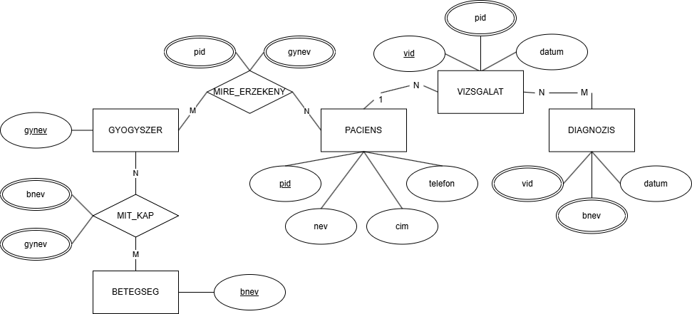
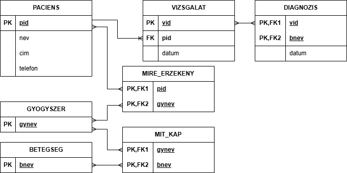

Adatok:
Készítők:
- Karpf Marcell - főnök
- Hajdu Hunor - alkalmazott
Feladatok:

ER-modell

Relációs-modell

Táblák létrehozása
CREATE TABLE 112e_ob.paciens (
pid CHAR(11) PRIMARY KEY,
nev VARCHAR(50),
cim VARCHAR(100),
telefon VARCHAR(20)
);
CREATE TABLE 112e_OB.vizsgalat (
vid INT PRIMARY KEY,
pid CHAR(11),
datum DATE,
FOREIGN KEY (pid) REFERENCES PACIENS(pid)
);
CREATE TABLE 112e_ob.betegseg (
bnev VARCHAR(50) PRIMARY KEY
);
CREATE TABLE 112e_ob.gyogyszer (
gynev VARCHAR(50) PRIMARY KEY
);
CREATE TABLE 112e_ob.mit_kap (
bnev VARCHAR(50),
gynev VARCHAR(50),
PRIMARY KEY (bnev, gynev),
FOREIGN KEY (bnev) REFERENCES betegseg(bnev),
FOREIGN KEY (gynev) REFERENCES gyogyszer(gynev)
);
CREATE TABLE 112e_ob.mire_erzekeny (
pid CHAR(11),
gynev VARCHAR(50),
PRIMARY KEY (pid, gynev),
FOREIGN KEY (pid) REFERENCES paciens(pid),
FOREIGN KEY (gynev) REFERENCES gyogyszer(gynev)
);
CREATE TABLE 112e_ob.diagnozis (
vid INT,
datum DATE,
bnev VARCHAR(50),
PRIMARY KEY (vid, bnev),
FOREIGN KEY (vid) REFERENCES vizsgalat(vid),
FOREIGN KEY (bnev) REFERENCES betegseg(bnev)
);
Táblák feltöltése
INSERT INTO 112e_ob.paciens (pid, nev, cim, telefon) VALUES
('17402213339', 'Kovács Krisztián', 'Hajdúhadház, Szűk u. 1.', '(66) 329-896'),
('17303313254', 'Andrészki Dezső', 'Téglás, Kossuth utca 125.', '(52) 421-643'),
('25602143598', 'Kajár Miklósné', 'Téglás, Petőfi út 12.', '(52) 342-453'),
('26511123265', 'Kocsis Béláné', 'Téglás, Március 15. utca 3.', '(52) 384-345'),
('14404013214', 'Rézbányai Ernő', 'Hajdúhadház, Bocskai út 35.', '(66) 325-643');
INSERT INTO 112e_ob.betegseg (bnev) VALUES
('grippe'),
('hepatitis'),
('encefaritis'),
('encephalomylitis'),
('pneumonia'),
('bronchitis');
INSERT INTO 112e_ob.gyogyszer (gynev) VALUES
('Semicilin'),
('Prednisolon'),
('Medrol'),
('Metyl-pred'),
('Ceclor'),
('Diflucan'),
('Calciphedrin');
INSERT INTO 112e_ob.vizsgalat (vid, pid, datum) VALUES
(1, '17402213339', '1996-02-11'),
(2, '17303313254', '1996-02-11'),
(3, '25602143598', '1996-02-11'),
(4, '26511123265', '1996-02-11'),
(5, '14404013214', '1996-02-11');
INSERT INTO 112e_ob.mit_kap (bnev, gynev) VALUES
('grippe', 'Semicilin'),
('hepatitis', 'Prednisolon'),
('encefaritis', 'Medrol'),
('encephalomylitis', 'Metyl-pred'),
('pneumonia', 'Ceclor'),
('bronchitis', 'Calciphedrin');
INSERT INTO 112e_ob.mire_erzekeny (pid, gynev) VALUES
('26511123265', 'Diflucan'),
('26511123265', 'Calciphedrin');
INSERT INTO 112e_ob.diagnozis (vid, datum, bnev) VALUES
(1, '1996-02-11', 'encefaritis'),
(1, '1996-02-11', 'encephalomylitis'),
(2, '1996-02-11', 'grippe'),
(3, '1996-02-11', 'hepatitis'),
(4, '1996-02-11', 'pneumonia'),
(5, '1996-02-11', 'grippe');
Lekérdezések
1. Listázd azokat a pácienseket, akiknek a neve „K” betűvel kezdődik!
2.Mely páciensek NEM érzékenyek semmilyen gyógyszerre?
3. Hány vizsgálat történt 1996-02-11-én?
4. Listázd a páciensek nevét és a diagnosztizált betegségeiket!
5. Hány különböző betegséget diagnosztizáltak egyes pácienseknél?
6. Mely vizsgálatokhoz tartozik több mint egy diagnózis?
7. Hány páciens érzékeny egyes gyógyszerekre?
8. Listázd azokat a betegségeket, amelyeket legalább 2 különböző vizsgálat során diagnosztizáltak!
9. Mely pácienseknek volt pontosan 1 vizsgálatuk?
10. Listázd ki a pácienseket, a betegségeiket és a gyógyszereiket!